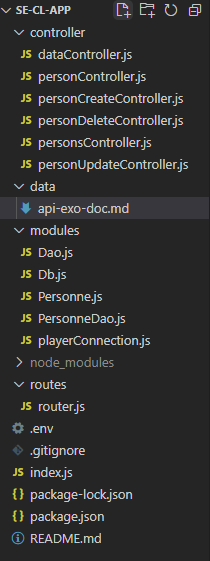

This is the documentation for the API made with nodejs - LPCODESI
12/03/2022
mkdocs hosted on gh pages:
https://omnislashh.github.io/LPCodesiApiRestDoc/
to update, after pushing /docs
mkdocs gh-deploy
Author - Elie
Application Programming Interface RESTful
-
definition
https://www.redhat.com/en/topics/api/what-is-a-rest-api -
further reading
https://www.redhat.com/en/topics/api/what-are-application-programming-interfaces -
article en français
https://practicalprogramming.fr/api-rest -
un exemple : l'API de wikipedia
https://www.mediawiki.org/wiki/API:Main_page -
cours complet
https://openclassrooms.com/fr/courses/6573181-adoptez-les-api-rest-pour-vos-projets-web/6817216-identifiez-les-avantages-d-une-api-rest -
autre article avec petit historique et contexte
https://www.data-transitionnumerique.com/api-rest/
Une synthèse des concepts clés :
- client/server separation
- stateless pas de sauvegarde de queries server
- cache
- système en couche
- endpoints accessibles
- sécurisé
- http protocol
- interface uniforme
Description:
//API REST avec expressjs
Administrer des joueurs et des équipes
-
repository: https://github.com/omnislashh/ser-cli-app.git
-
outils: Windows10, Wamp, nodejs, expressjs, postman
-
utilisation: CRUD - CREATE, READ, UPDATE, DELETE
-
routing - endpoints uri: /persons /person/:id /data/:options /personcreation /personupdate /persondelete
Endpoints exemples:
personnes:
GET http://localhost:3000/persons
GET http://localhost:3000/persons/1
GET http://localhost:3000/personsfree
PATCH http://localhost:3000/personupdate?id=35&name=updated&prenom=prenomUp&date=1980-05-06
PATCH http://localhost:3000/personupdate?id=2&name=updatedJustName
PATCH http://localhost:3000/personupdate?id=2&name=&prenom=updatedJustPrenom
PATCH http://localhost:3000/personupdate?id=2&name=&prenom=&date=1980-08-06
PUT http://localhost:3000/personcreation?name=Casillas&prenom=Iker&date=1981-05-20
DELETE http://localhost:3000/persondelete?id=6
departements:
GET http://localhost:3000/departements
GET http://localhost:3000/departement/1
GET http://localhost:3000/departementsfree
PUT http://localhost:3000/departementcreation?nom=France
PATCH http://localhost:3000/departementupdate?id=3&nom=Olympique-de-Marseille
DELETE http://localhost:3000/departementdelete?id=3
Verbes http utilisés et justifications :
PUT plus naturel pour les créations et mises à jour complètes (URI ressource ressource créée = URI de la requête PUT)
PATCH pour les mises à jour partielles
POST en dernier recours (contrainte à la création d'une ressource liée avec Header Location)
- codes utilisés:
https://developer.mozilla.org/en-US/docs/Web/HTTP/Status
Architecture:
MVC - client/server en local
Arborescence:

Design pattern:
- singleton pour se connecter une seule fois
- choix design pattern pour Data Access Object: table data getaway design pattern vs active record
avantage table data getaway: separe la couche metier de la couche persistante
Notes additionnelles :
// la class Dao implemente le Dal (Data Access Layer)
// en javascript (syntaxe : CommonJS) : pas de classe abstraite
// classe abstraite definition :
// empecher la creation d'objet + lister les methodes qui doivent etre implantée + declencher des erreurs
// solutions :
// 1 - code heroes https://www.codeheroes.fr/2017/11/08/js-classes-abstraites-et-interfaces/
// 2 - babel - pas conseillé en prod
// 3 - use typescript
- bdd:
// scripts sql in /data/BDD
- JWT:
POST http://localhost:3000/api/login
GET http://localhost:3000/api/me
ajout d'une couche de securité/connexion user avec le bearer token
https://www.wawasensei.dev/tuto/tuto-authentification-refresh-json-web-token-en-nodejs-avec-express
// stateless: sans stocker d'infos user
// statefull: avec stockage de session
// connexion s'appuie sur 2 tokens: l'un qui repose sur l'autre
// deconnexion: lorsque le premier périme, le second est invalide, pas besoin de faire un logout
Améliorations prévues :
admin des associations via api endpoints
// à voir : refresh de token